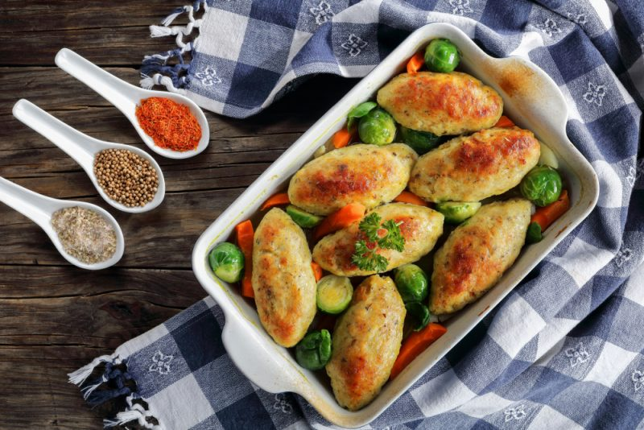
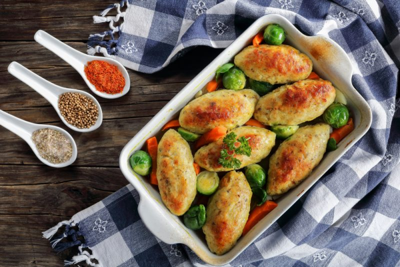

Інгрідієнти:
1)Куряче філе – 500 г.;
2)Цибуля - 2 шт.;
3)Кабачки – 300гр.;
4)Манка – 2 ст.л.;
5)Яйце - 1 шт.;
6)Зелень – пучок;
7)Олія;
8)Сіль, перець
за смаком;
Спосіб приготування:
Якщо кабачок старий, його потрібно очистити від шкірки і насіння. З молодим овочом це робити не потрібно. Натерти кабачок на великій тертці. Дрібно нарізати цибулю та порубати зелень. Філе нарізати на невеликі шматочки гострим ножем. У нарізане філе вбити яйце та всипати спеції. Додати цибулю та зелень. З кабачків віджати руками сік і додати фаршу. Вимісити фарш до однорідності, потім додати манку і перемішати ще раз. Залишити на 20 хвилин, щоб манка набрякла. За цей час розігріти духовку до 200 °. Сформувати курячі котлети з овочами мокрими руками і викласти на змащений лист. Запікайте котлети 20 хвилин|мінути| при 200°. До столу подавайте не відразу - дайте страві трохи охолонути. Страва готова, смачного!;